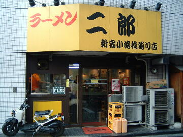
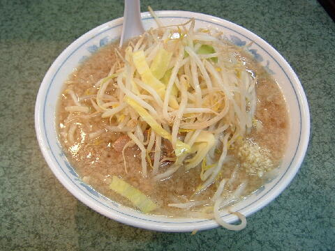
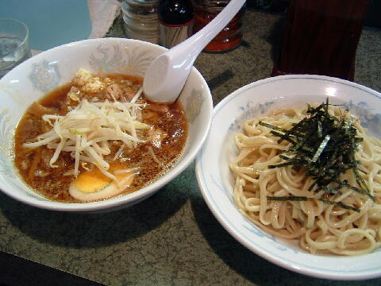

新宿区 西新宿 7-5-5
無（元日は休み）
11：00〜23：00

小ラーメン 750円、ぶた入りラーメン 900円、ぶた入りＷラーメン 1150円
大ラーメン 850円、大盛ぶた入りラーメン 1000円、大盛ぶた入りＷラーメン 1250円
大二郎 950円
小つけ麺 850円、ぶた入りつけ麺 1000円、ぶた入りＷつけ麺 1250円
大つけ麺 950円、大盛ぶた入りつけ麺 1100円、大盛ぶた入りＷつけ麺 1350円
大二郎つけ麺 1050円
学生割引ラーメン 600円
味付煮玉子 100円、自家製めんま 100円、韓国のり 100円
ビール（中瓶）おつまみ付 500円
店員は、店員２名。人間模様があるみたい。
黒コショウ、トウガラシ、醤油ダレ。
レンゲ有、ティッシュ有、名刺無。
BGM有。
トッピングは、野菜，醤油，背あぶら（固まりでも可），ニンニク。
つけ麺は上記のトッピングに加えて、にぼし＆かつお，辛味増，マー油のトッピングができる。
学生割引ラーメンは大盛無料。
「ラーメン二郎 小滝橋」でヤフー検索
「ラーメン二郎 小滝橋」でヤフーリアルタイム検索
「ラーメン二郎 小滝橋」でグーグル検索

ラーメン ニンニク
麺は、平中太ストレート。普通だとかなり柔らかい。プニュプニュ。
そんでもってすごく短い。普通の2/3位。アメリカのカップヌードルみたいな感じ。
ぶたは、柔らかいのと、パサパサしたのと、トロトロしたのと、脂身が多いのと色々。
スープは、醤油で食わせる非乳化タイプ。背あぶらチャッチャッ。
ヤサイは、モヤシ8：キャベツ2の割合。茹で方は普通。
ニンニクは、細かな生キザミニンニク。少な目。
麺硬、アブラ少な目、ニンニクマシマシで食べてみたい。

つけ麺 ニンニク
トッピングは、ラーメンのトッピングとつけ麺のトッピング。
タレの皿には、ヤサイ、千切りのチャーシュー、メンマ、味付玉子半分。
トッピングのニンニクはこちら。タレは酸味のあるタイプ。
麺の皿には、麺にノリがかかっていた（現在ノリは無し）。
ＰＣ店